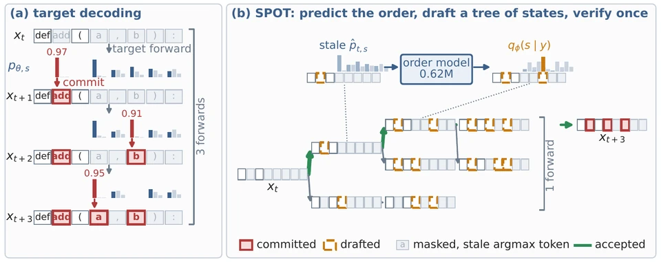

On the SPOT: Enhancing Speculative Decoding for Diffusion Language Models via Commit-Order Prediction
SPOT predicts where a diffusion language model commits next, and the model verifies a whole tree of drafts in one pass: up to 6.8× fewer model passes and 3.2× the throughput of standard decoding, exact at any temperature.
arXiv PDF Project page Code Drafters
Abstract
Diffusion language models (DLMs) promise parallel text generation, but in practice face an unresolved speed-quality trade-off. Exact decoding fills in only one masked position per model pass, while faster multi-token decoding schemes are lossy. Speculative decoding is the standard lossless acceleration for autoregressive models. However, it does not transfer directly to DLMs, which must choose both what to generate and where. We show that this order is the missing piece: the model's own predictions from the previous pass already give the right token at over 90% of positions, but not which position comes next. We introduce Speculating Positions Order Trajectory (SPOT), a 0.62M-parameter model that reads only the target's output distributions, predicts this order and proposes a tree of candidate continuations, which the target verifies in a single pass by state equality. Coupled-noise match, which shares Gumbel noise between drafter and target, keeps this verification exact at any temperature. This approach also inspired us to introduce SPOT-Sets for dynamic threshold decoding, where a pass commits several positions: SPOT-Sets drafts whole commit sets together with their tokens. Our comprehensive experiments show that SPOT cuts target passes by up to 6.8× and reaches up to 3.4× the throughput of standard decoding on SDAR-8B, matching or beating the calibrated and training-free drafting baselines in every task and budget at T = 0 and T = 1. In addition, we show that SPOT's learned drafter transfers across models, demonstrating successful transfer across six different DLMs; with a light calibration, the SPOT-Sets drafter transfers as well. On top of dynamic threshold decoding, SPOT-Sets improves the throughput of SDAR-8B by 59% on average over the threshold decoder alone.
BibTeX
@article{shlomi2026spot,
title = {On the {SPOT}: Enhancing Speculative Decoding for Diffusion Language Models via Commit-Order Prediction},
author = {Shlomi, Eliezer and Rahimi, Eliron and Mendelson, Avi and Baskin, Chaim},
journal = {arXiv preprint arXiv:2610.22543},
year = {2026},
doi = {10.48550/arXiv.2610.22543},
eprint = {2610.22543},
archivePrefix = {arXiv},
primaryClass = {cs.LG},
url = {https://arxiv.org/abs/2610.22543}
}